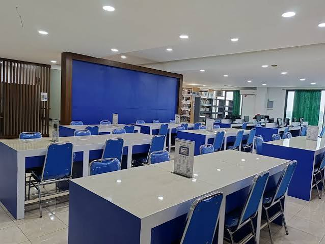

Peminjaman & Pengembalian
Pinjam hingga 5 judul selama 14 hari, perpanjangan daring, dan meja pengembalian yang cepat.
Ruang baca masyarakat Bumi Rajo: menghimpun buku, jurnal, karya lokal, dan sumber belajar digital untuk pelajar, mahasiswa, peneliti, dan seluruh warga Kabupaten Tanah Datar.
Perpustakaan Tanah Datar adalah perpustakaan daerah yang berfungsi sebagai pusat koleksi, diseminasi informasi, dan pengembangan literasi masyarakat. Kami mengelola koleksi umum, koleksi keislaman, ensiklopedia, serta karya penulis dan budayawan Tanah Datar.
Selain melayani peminjaman di gedung, kami mengoperasikan perpustakaan keliling, pojok baca di sekolah dan desa, serta layanan digital agar bahan bacaan dapat diakses dari mana saja.
Misi Utama: mewujudkan masyarakat Tanah Datar yang gemar membaca, cakap informasi, dan bangga akan karya lokal.
Nilai Kami: ramah, terbuka, inklusif, dan menjaga khazanah kebudayaan Minangkabau.
Pinjam hingga 5 judul selama 14 hari, perpanjangan daring, dan meja pengembalian yang cepat.
E-book, jurnal ilmiah, arsip surat kabar lama, dan repositori karya penulis Tanah Datar.
Ruang baca berpendingin, stopkontak tiap meja, dan internet gratis untuk umum.
Mobil keliling menyambangi sekolah, nagari, dan pasar setiap pekan.
Kelas menulis, pelatihan riset, bedah buku, dan pendampingan baca untuk sekolah.
Koleksi cerita anak, komik, mainan edukatif, dan sudut dongeng tiap Sabtu pagi.
Kamus, atlas, biografi tokoh, hingga khasanah adat istiadat Minangkabau.
Jurnal ilmiah, tugas akhir, dan basis data daring yang dapat diakses anggota.

Sudut baca tenang dengan pencahayaan natural dan area diskusi kelompok.
Sesi dongeng untuk anak usia 5–10 tahun di Pojok Anak, pukul 09.00 WIB.
Pelatihan menulis esai dan cerpen bersama komunitas penulis Tanah Datar.
Diskusi buku sejarah dan budaya daerah bersama sejarawan serta pustakawan.
Kunjungan mobil keliling ke sekolah dasar di wilayah Limo Kaum dan Pariangan.
Pendaftaran keanggotaan gratis dan dapat dilakukan langsung di meja layanan atau secara daring. Cukup membawa KTP atau kartu pelajar untuk mulai meminjam koleksi.